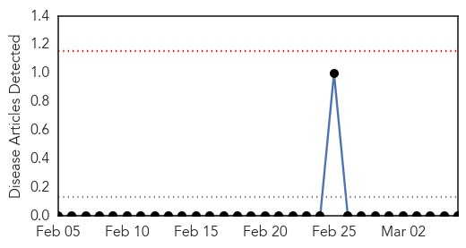
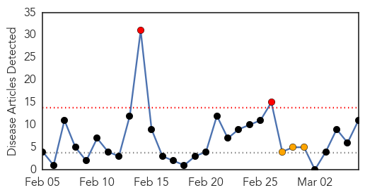
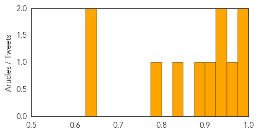

Bubonic Plague
30-Day Web Trend
0 alerts, 0 warnings

30-Day Twitter Trend
0 alerts, 0 warnings

Article Locations

Article Confidences

Top Articles:
-
No articles found for Mar 06, 2014
Top Tweets:
-
No tweets found for Mar 06, 2014
Measles
30-Day Web Trend
2 alerts, 3 warnings

30-Day Twitter Trend
0 alerts, 0 warnings

Article Locations
Article Confidences
Top Articles:
- 0.987
- Measles, plague, polio are 3 diseases humanity said we'd conquered, but haven't
- 0.987
- Measles, plague, polio are 3 diseases humanity said we'd conquered, but haven't
- 0.953
- Measles Spreads In Massachusetts, While Rise In Cases Nationwide Costs Local Authorities A Lot Of Money
- 0.938
- New Zealand: Auckland measles outbreak at 58
- 0.929
- Measles case reminder of need to vaccinate, doctors say
- 0.906
- Two people with measles might have exposed others at a Navy commissary and other facilities
- 0.896
- Parkes Champion-Post
- 0.837
- ECDC reports measles outbreak on cruise ship
- 0.789
- Allegheny County Health Department hire to focus on disease
- 0.648
- Aid groups warn of “catastrophic” health crisis in CAR
- 0.643
- Measles alert in Hawke’s Bay
Top Tweets:
-
No tweets found for Mar 06, 2014